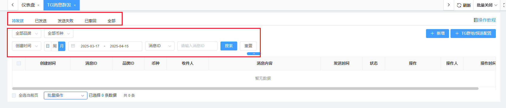
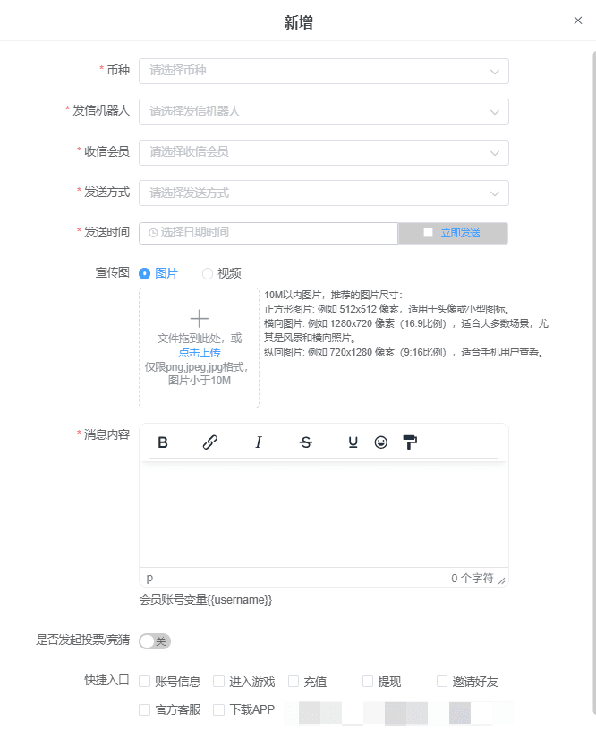
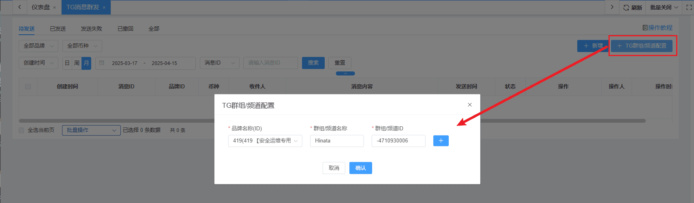
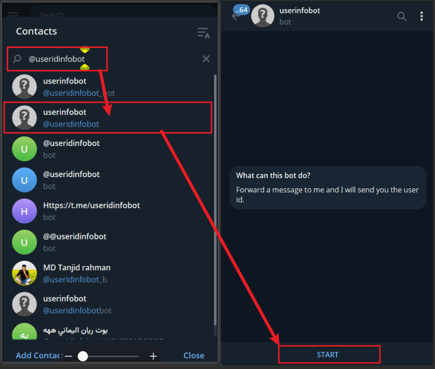
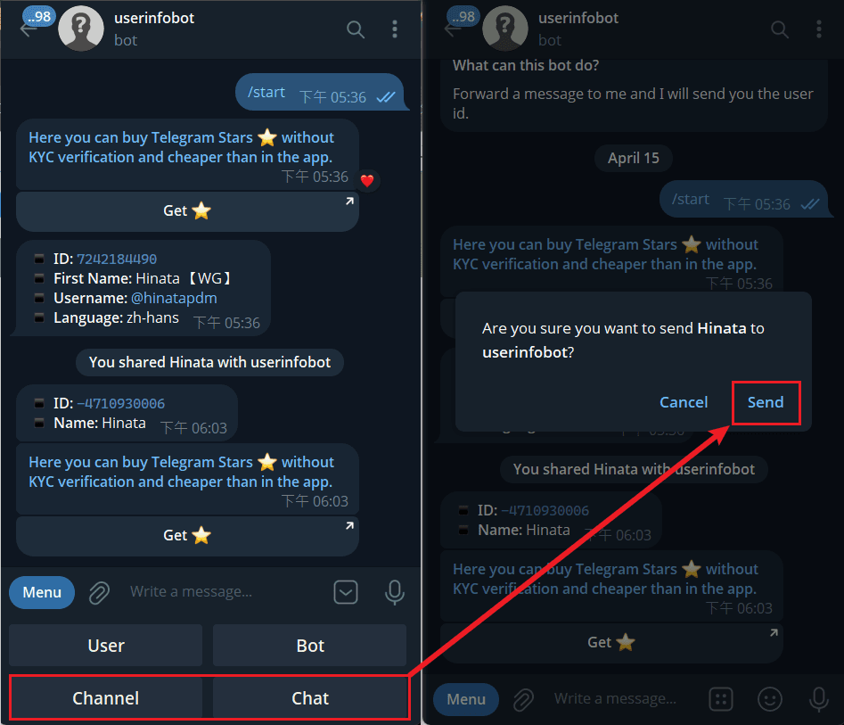
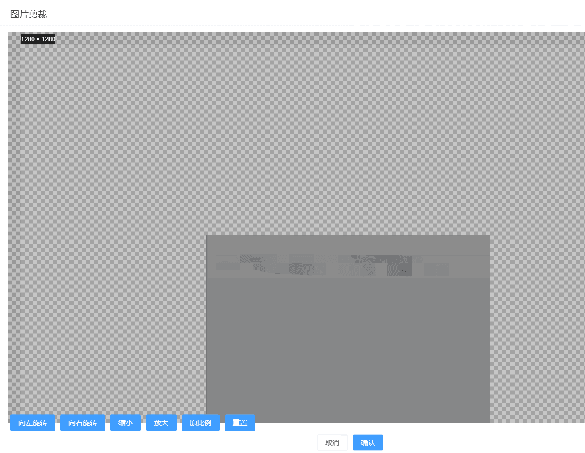

TG消息群发
一、简介
- 路径 : 会员 > TG机器人群发消息
- TG机器人群发消息 : 支持按VIP等级、会员层级、上级代理ID、顶层代理ID给不同的会员发送TG消息。
二、功能介绍
- 消息状态分成 : 待发送、已发送、发送失败、已撤回、全部。用户可以透过分页切换消息状态的信息。
- 用户可以藉由品牌、币种、时间、消息ID，搜索筛选出对应的信息。

- 新增群发消息
- 配置完成后，点击确认。系统将会依照配置的内容发送信息。
-
TG消息群发 - 支持发起投票/竞猜
- 搜索、列表字段、详情、增加投票/竞猜状态；
- 新增、修改、支持投票/竞猜编辑；
- 对发起投票/竞猜的消息，新增操作项“投票/竞猜统计”

- 新增TG群组/频道配置
- 选择品牌ID、输入群组/频道名称、输入群组/频道ID。可点击加号，新增多组。
- 配置完毕后点击确认，即可新增完毕

- 如何查询TG频道或群组名称与ID?
- 于TG中，增加机器人 ( @useridinfobot ) 并点击 STAR

- 选择菜单中想搜寻的 Channel频道 或 Chat群组，并选择该群后按下Send，即可得到名称与ID。

- 于TG中，增加机器人 ( @useridinfobot ) 并点击 STAR
- 特别注意：
- 1、TG群组/频道管理员 将机器人拉进群组
2、机器人会自动识别群组/频道ID，并发到群管理员工的TG账号上
3、将群组/频道ID配置在后台即可
注意：群组ID前面的 “-”也别漏掉。 - 4、宣传图设置-图片剪裁要全屏剪裁，不然会有空白
